Calculator
Instructions for special functions
Special Functions
First of all, the special functions are labeled in a turquoise color
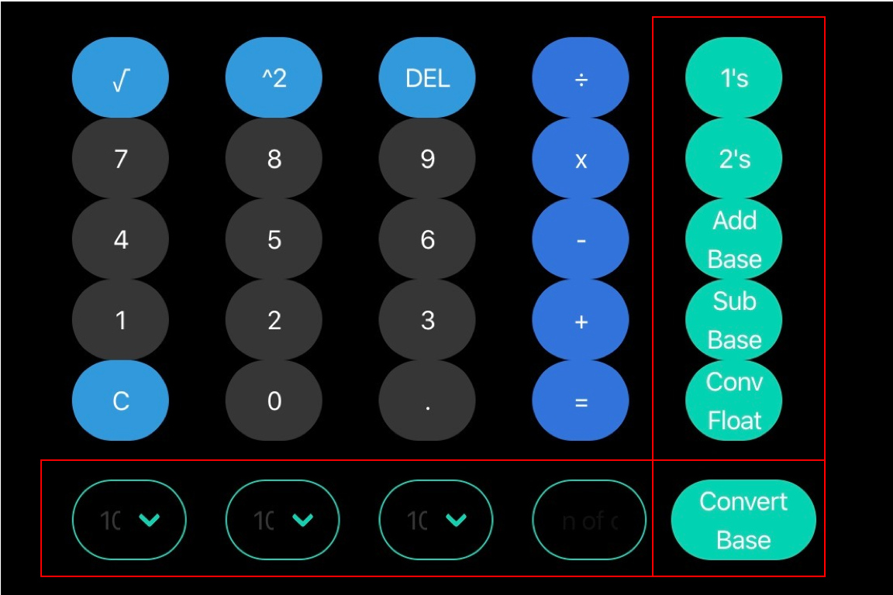
To convert a number from one base to another:
1) Type the number in the first textbox and select the base of the number
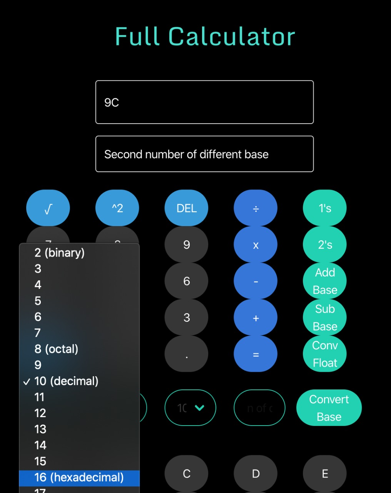
3) Select the base that the number will be converted to
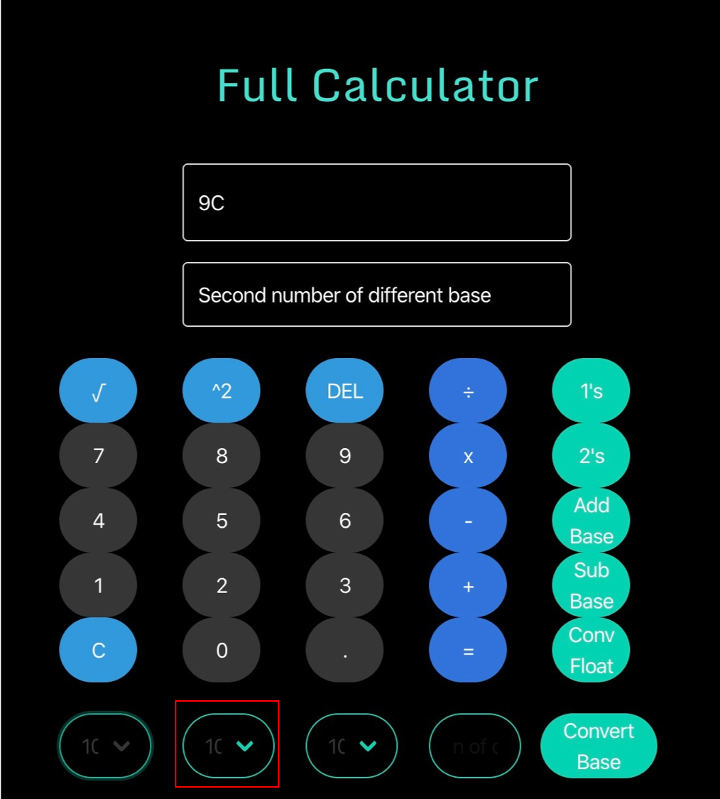
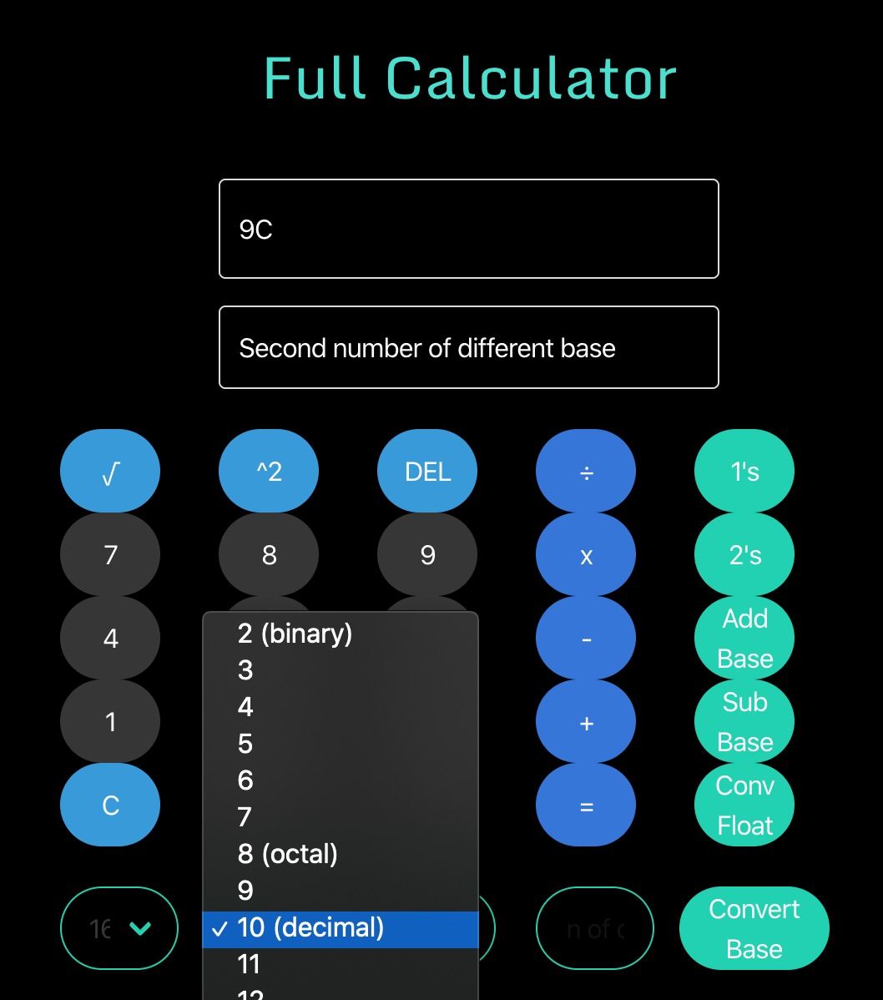
4) Click on the "convert base" button
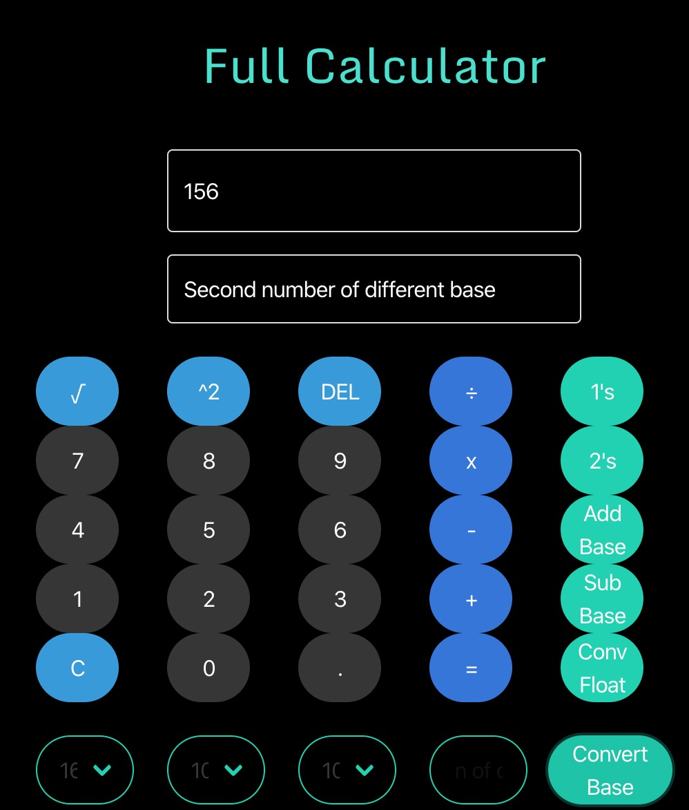
5) If you want to convert a floating point number,
click on the "Convert Float Button"
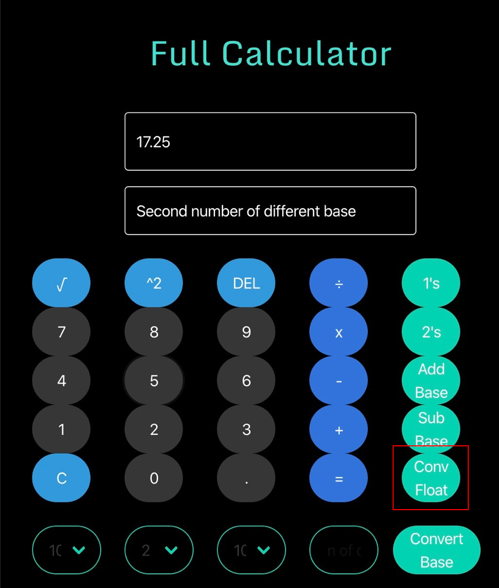
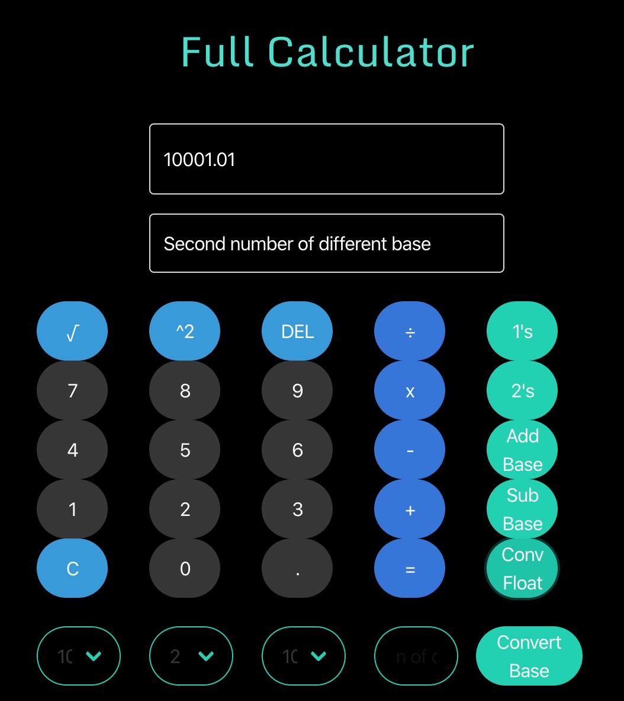
To add or subtract numbers of the same/different bases:
1) Type the number to operate in the first textbox and select the base of the number
2) Type the second number to operate in the second textbox and select the base of the number
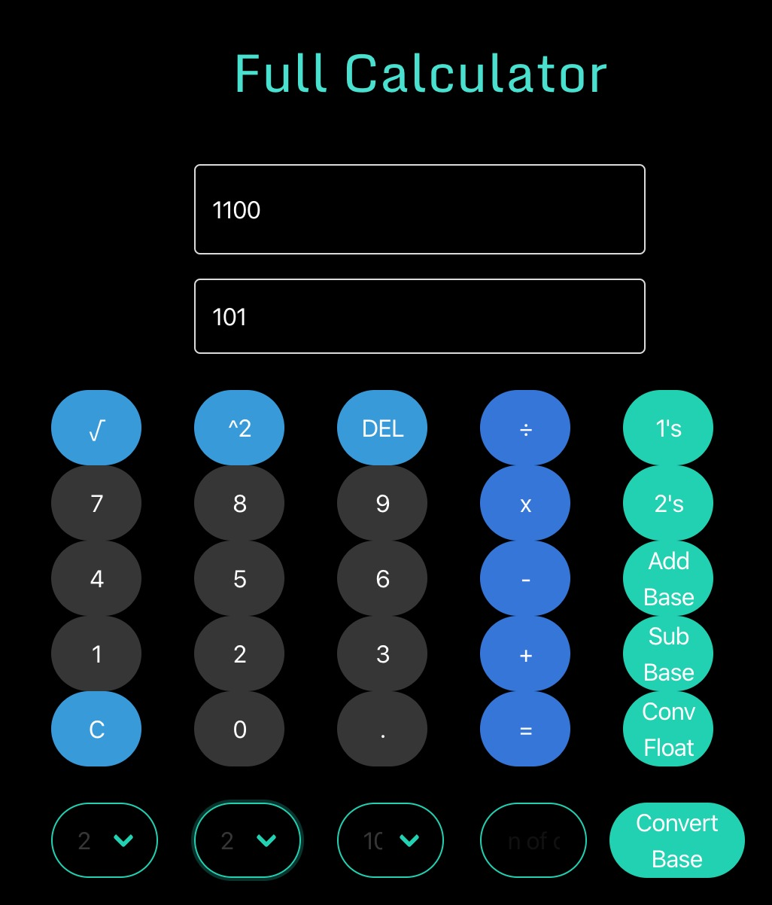
3) Select the base of the result
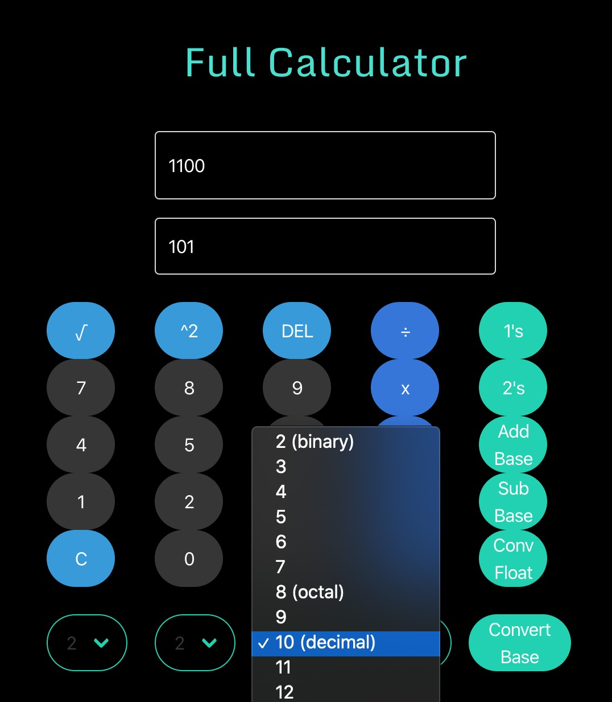
4) Click on the "add/sub base" button and the result will be displayed in the first textbox
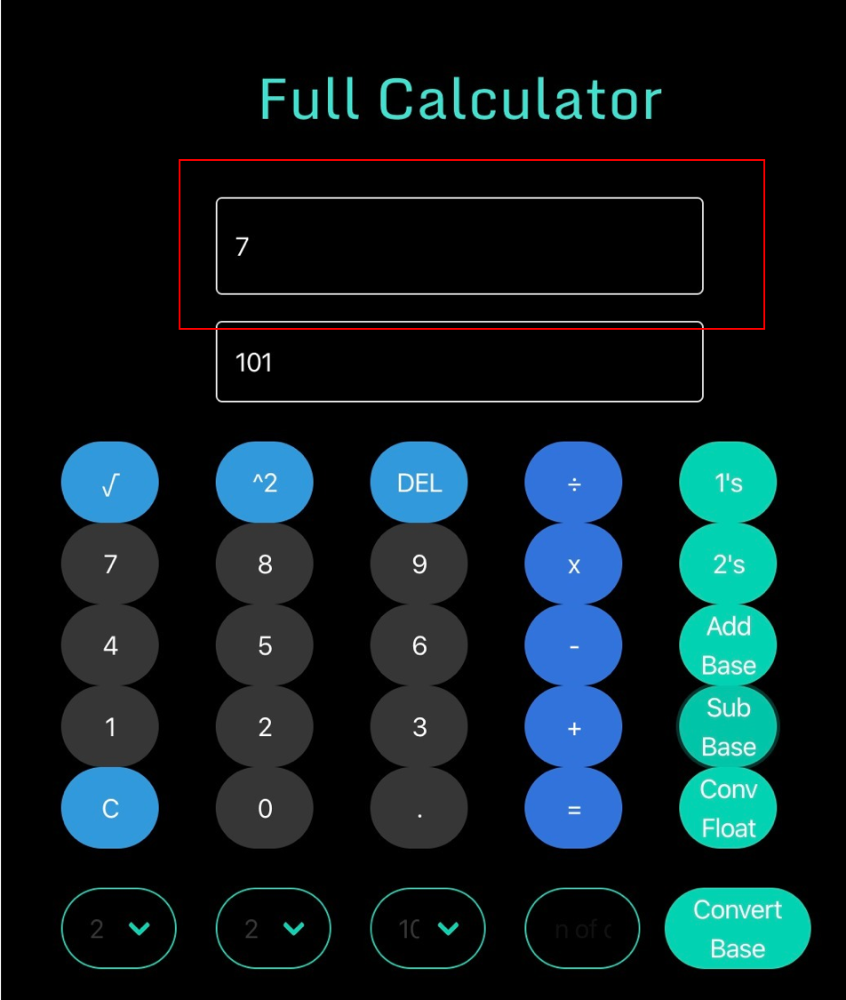
To calculate Radix/Diminished radix:
1) Type the number to operate in the first textbox and select the base of the number
2) Type the number of digits in the entry box
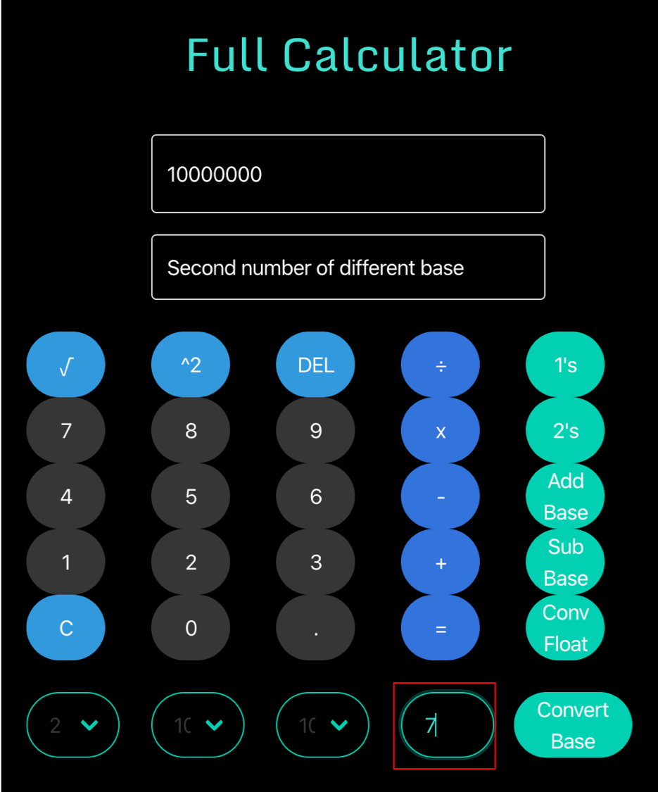
3) Click on the "2's button to calculate the radix"
4) Or click on the "1's button to calculate the diminished radix"
5) The result will be displayed in the first textbox"
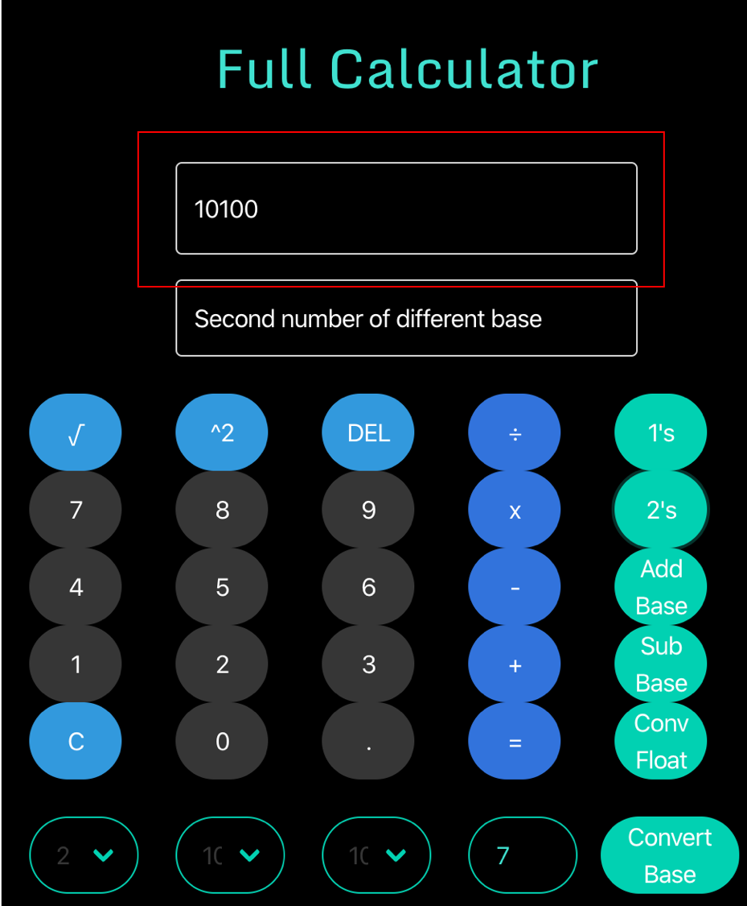